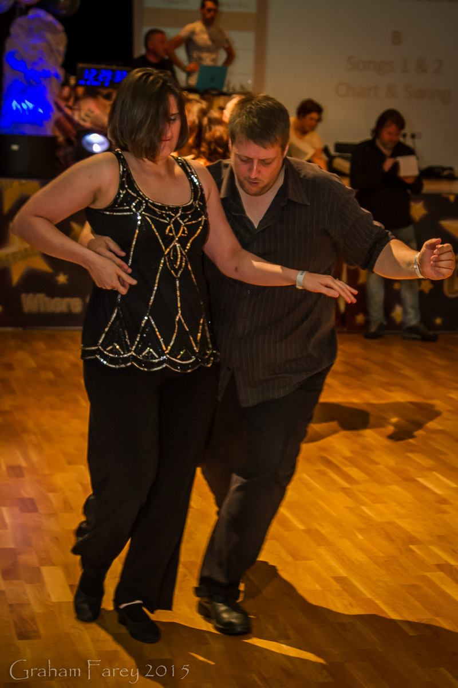

Ceroc Northern Champs 2015
Published on: Jul 13, 2015
My future wife Caroline and I both like to dance very much, in fact it is how we met. Our chosen dance style is Modern Jive or Ceroc as it's known as both a style and a brand. We enjoy it so much that we have volunteered as regular Taxi Dancers for our local venue.
One of Caroline's oldest and closest friends organised the Ceroc Northern Champs competition that took place on June 27th 2015. As a show of support, we decided to go along and to participate in the competition. We entered into Lucky Dip, Novice Amateur and Back to Basics.
Lucky Dip
Lucky Dip is more of a fun freestyle category. At the beginning of the day you are paired randomly with a partner who you would continue to compete with for the rest of the category. One of the things I like most about this category is that it's pretty much the only category where you can be sure that absolutely everyone is freestyling and that there are no choreographed moves.
I was fortunate enough to partner with someone who I had danced with before. This has both pros and cons, on one hand you know what to expect while competing, on the other hand it takes away some of the fun that comes with competing with someone you've never danced with before. I've competed in four Lucky Dip competitions and my favourites have been those where I haven't danced with that partner before.
Lucky Dip was one of the few categories where in each round a number of couples would be knocked out. Each round had it's own musical tone and making it to the next round gave a sense of achievement. The round that was the most fun had a musical theme of Saturday Night Fever and was heavily laden with cheese. I made it through to the forth round of this category and it's a result I'm happy with.
Novice Amateur
Typically in ceroc championships this is referred to as Intermediate. In normal Intermediate competitions there can be a lot of advanced dancers who are partnering with someone who is of an intermediate level. The name change in this case was to encourage the category to only be made up of intermediate dancers, people who were new to dance competitions or people who had never placed in a competition before. This really was to make the category much fairer to all participants.
Normally in a competition, couples are knocked out with each round. It's entirely possible to have three minutes of song that doesn't work for you get knocked out straight away. The best thing about this category in Northern Champs was that you got to dance to all the tracks and you are given an aggregate score for your performance over each track.
Neither my partner or I are greatly polished in our dancing, we like to play around to the music and we don't have any big wow moves. We did get plenty of comments from other people about how good our connection was and how happy and loved up we were in our dancing. We didn't place in this competition so there were no medals for us, but each person who gave us a positive comment was a win as far as I am concerned.
You won't be able to see us very well, we're at the opposite side of the hall, but here we are dancing to our swing track during one of the rounds.
When it came to the last round of this category I looked at Caroline and I said "We both know we are not going to place in this competition, so fuck it, let's have fun and do this Caz & Mark style". This really took the pressure off of us and we gave it our best, at one point I got caroline into a five spin walk into a drop and we managed to finish in a stylish lean we'd learnt just a few days before. Coming off the dance floor we were told it was our best dance of the day, and that made me feel great.
Back to Basics
In Back to Basics you are only supposed to use the 12 beginners moves, it's all about how you style the moves and your connection with your partner. If you were to do an advanced move, at best you wouldn't be scored for it and at worst you'd be marked down for it. For a bit of a laugh we chose to reverse the typical gender roles in this with Caroline leading and with me following. Every time we go out dancing, we always have at least one dance where Caroline leads so I was somewhat ready for this.
What we weren't really prepared for was forgetting all of the 12 basic moves. So after a less than successful dance, we took to the dance-floor during one of the breaks in between the competition rounds and started practicing each basic move in turn, counting them as we went.
There were only three single song rounds in this category over the course of the day and come the last round we were quite worn out from the rest of the competition. Then it turned out the last track was "Low" by Flo Rida, Caroline can be quite lyrical in her dancing and that's something I love about her. Our last dance in this category turned out to be a bit comedy, a bit stylish and for us a whole lot of fun.
Showcases
Showcases take a lot of work to produce, the examples I've seen often need careful choreography and musical selection. Mark & Sadie put on a great comedic homage of Little Red Riding Hood.
My favourite of the three performances was a Team Cabret entitled "Cogs Present Stirling". I am admittidly a big Lindsey Stirling fan and I went to see her live in Manchester. During her set she went on to talk about the inspiration for her song Shatter Me. So I was excited about the Cog's song choice:
The Real Winners
A lot of contestants spend a lot of time practicing ahead of competitions, learning new routines and and fine tuning their performances. Caroline and I were far too busy planning our wedding, so we rocked up on the day and freestyled it. We never expected to win anything or to place, if we were happy in our performance and we were smiling and having fun, then that was good enough for us.
In the few competitions I've been to, I've seen a number of people win multiple medals and trophies and head back to their chair to take them off and discard them for whatever reason. Whether it's because they feel they deserve better or it's not the trophy they were after or for any other reason, I can't help but feel that this immediate discarding of their prize is tragic. There are a lot of people who try hard who would be over the moon with even a runner's up medal.
The Real Winners of these competitions are not those who win a medal, it's those people who win the medal and then refuse to take them off or to put down their trophies. The people whose smiles are wide and bright with pride of what they accomplished no matter of the position they claimed.